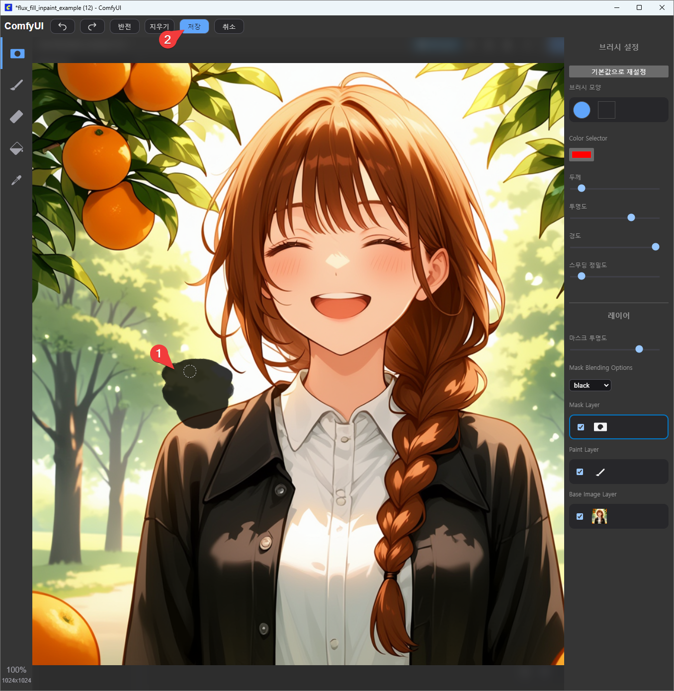
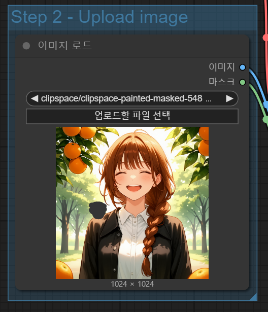
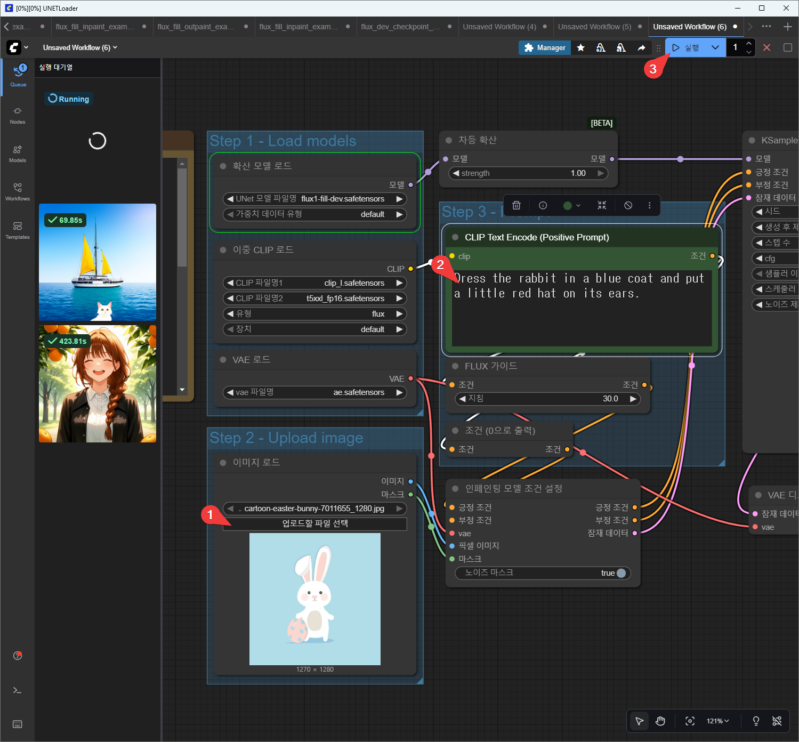
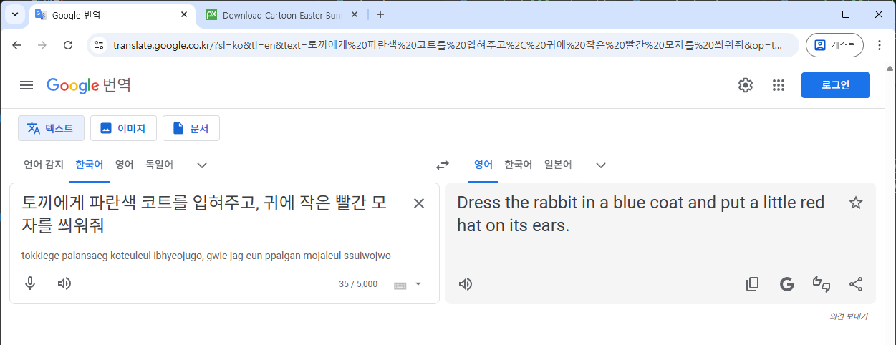
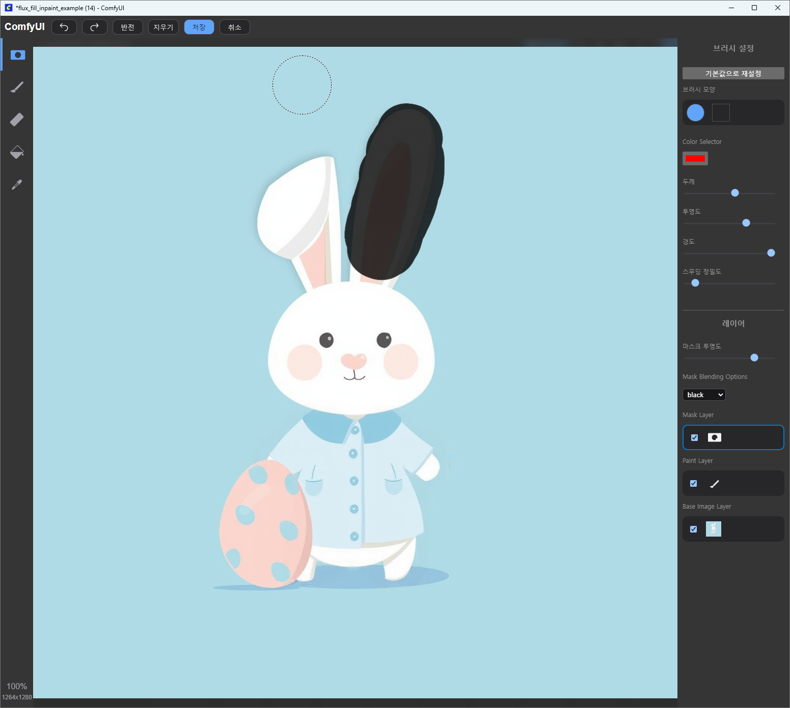
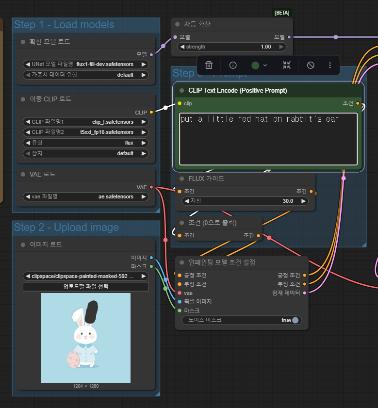

ComfyUI - Flux 인페인트 워크플로
Flux 인페인트 워크플로 기본

이미지 편집. 예를 들면 토끼 이미지에 옷을 입힌다거나 하는 식.

이런 류의 모델을 사용하려면 알파채널에 대해 이해해야 한다. 위 경우에서는 하얀 귀여운 크리처(creature)를 놓을 위치를 알파채널을 통해 AI 모델에게 알려줘야 하기 때문이다.
실습 1: comfyUI에서 생성한 이미지 사용

워크플로 실행
-
툴바에서 "Queue"를 선택한다.
-
이미 만들었던 결과물 중 하나를 Upload Image 쪽으로 드래그 & 드롭한다.
2.1. 다음의 방법으로 효과가 나타날 영역을 알파채널로 표시한다.
2.2. 이미지를 오른쪽 클릭하고 "Open in MaskEditor | Image Canvas" 메뉴를 선택한다.

2.3. 마스크 에디터에서 AI가 편집해 줘야 하는 영역을 마우스 왼쪽 버튼을 누른 채로 문질러 표시하고 "완료" 버튼을 누른다. 
2.4. 노드에 반영된 걸 확인한다.
 -
프롬프트를 적는다. 여기서는 "A very cute white milky creature on her shoulder (어깨 위에 아주 귀여운 우윳빛깔 생물)" 라고 적었다.
-
"실행" 버튼을 누른다.
실행 결과

실습 2: 다운로드받은 이미지 사용
편집에 사용할 이미지 준비
https://pixabay.com/illustrations/cartoon-easter-bunny-cartoon-bunny-7011655
위 url에서 이미지 다운로드 받아 사용

워크플로 실행

-
"업로드할 파일 선택" 버튼을 눌러 다운로드받은 토끼 이미지를 선택한다.
1.1. 위 실습 1의 2.1 부분의 방법으로 토끼의 몸통과 한 쪽 귀에 마스킹을 한다.

-
수정할 내용을 입력한다.
한글
토끼에게 파란색 코트를 입혀주고, 귀에 작은 빨간 모자를 씌워줘영문
Dress the rabbit in a blue coat and put a little red hat -
"실행" 버튼을 누른다.
실행 결과

의도한 바와 조금 다른 결과가 나왔다. 파란 코트는 잘 입혀줬는데 귀에 작은 빨간 모자를 씌워주지 않았다.
한 번에 한 곳에만 마스킹을 하고 일을 시켜야 잘 해준다. 그래서 1의 방법을 이용해 추가로 작업한다.
실행 결과를 이용해 계속 작업

작업 결과물을 소스 이미지 영역에 드래그 & 드롭 한다.

귀 부분만 마스킹한다. 그리고 내용도 수정한다.

put a little red hat on rabbit's ear
그리고 마스킹을 귀에만 수정한 다음 실행 버튼을 눌러준다.
결과는 다음과 같다.

마스킹 수정

위 방법으로 마스킹을 수정하는데 마스킹하는 영역을 더 크게 해야 모자가 귀를 다 덮을 듯 하다.

위와 같이 마스킹을 수정하고 prompt도 아래와 같이 수정(little을 뺌)하고 다시 실행해 본다.
put a red hat on rabbit's ear
수정된 실행 결과

이 결과도 마음에 들지 않아 문구를 다음과 같이 수정했다.
put a long red hat on rabbit's ear

마스킹 삭제 방법
만약 마스킹을 삭제 등 수정해야 한다면 다음과 같이 한다.

마스킹을 수정하기 위해 업로드한 이미지 부분을 오른쪽 클릭하고 "Open in MaskEditor | Image Canvas" 를 또 선택한다.

- 지우개를 누르고,
- 코트를 위해 칠했던 부분을, 마우스 왼쪽을 누른 채로 마우스를 움직여 지워준다.

브러시 설정의 두께 값을 올려주면 브러시가 커져서 지우거나 색칠할 때 편하다.

위와 같이 귀만 남기고 코트 부분의 마스킹을 지워, 마스킹을 수정했다.